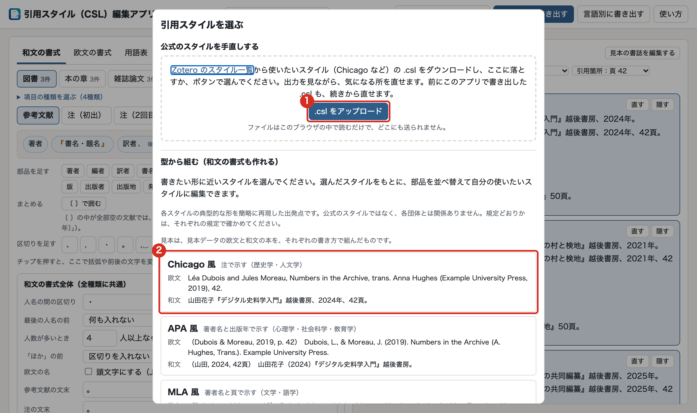
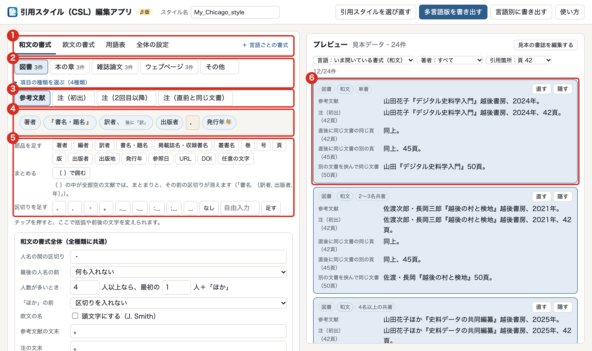
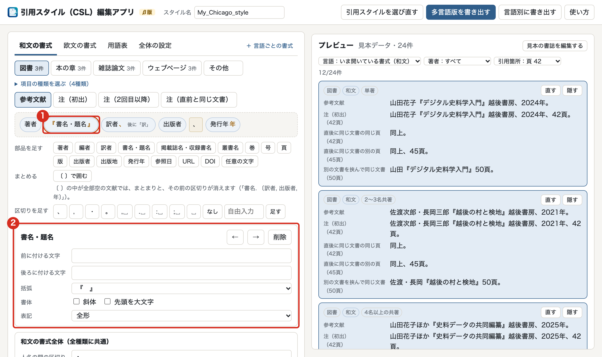
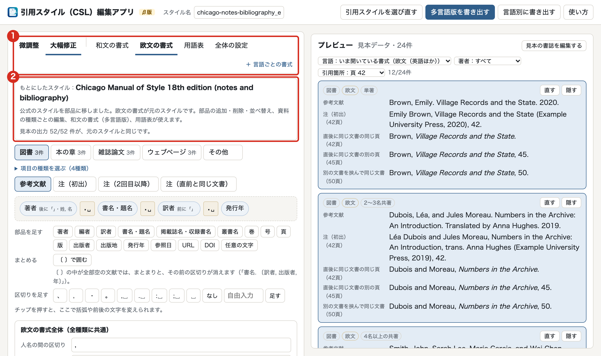
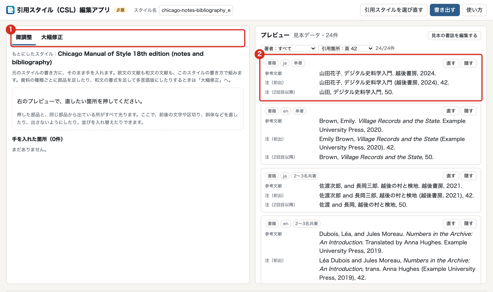
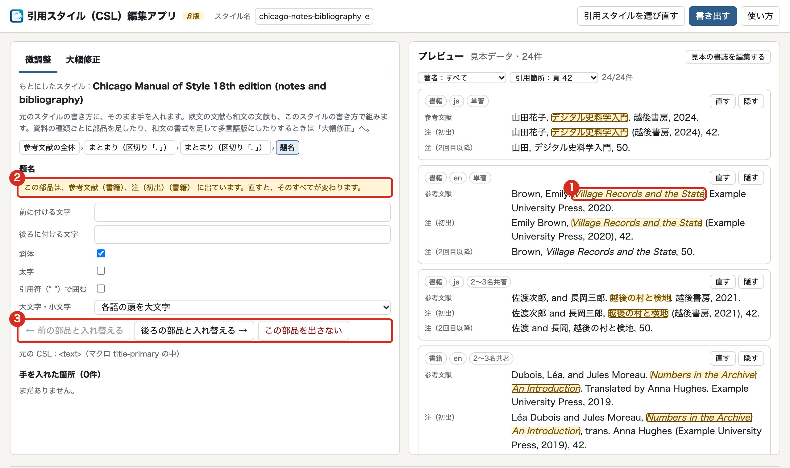
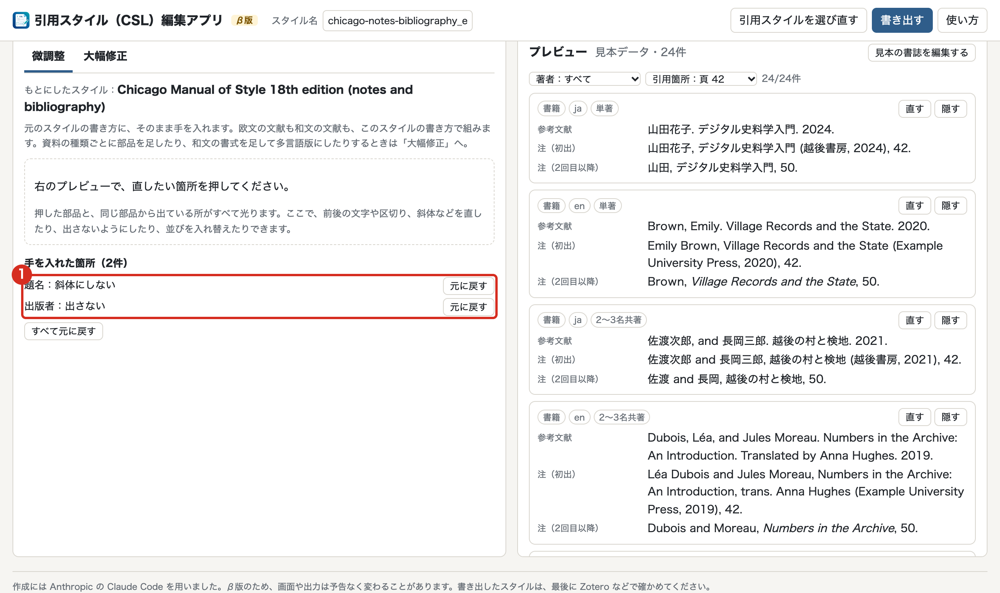
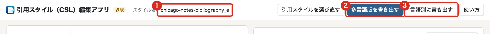

引用スタイル（CSL）編集アプリ 使い方
このアプリでできること
- 日本語の画面で、引用スタイル（CSL）を作る・直す。CSL は、注や参考文献の書き方を記述する形式で、Zotero などの文献管理ソフトが読む
- 作ったスタイルを Zotero に入れると、Word・LibreOffice・Google ドキュメントで、注と参考文献リストがその書き方で組まれる
- 和文と欧文を書き分けられる。文献ごとに、Zotero の「言語」欄で自動で切り替わる
- ブラウザで開くだけで使える。ネットにつながっていなくても動く
- 読み込んだ書誌や .csl はブラウザの中だけで処理し、外部には送らない
β版のため、画面や出力は予告なく変わることがある。書き出したスタイルは、最後に Zotero などで確かめる。
3つの使い方
| 使い方 | 出発点 | 向いているとき | 和文の書式 |
|---|---|---|---|
| 型から組む | Chicago 風・APA 風・MLA 風・IEEE 風 | 書きたい形が決まっていて、一から並べたい | 作れる |
| 公式のスタイルを微調整 | Zotero で公開されている .csl | 区切りや斜体など、少しだけ直したい | 作れない |
| 公式のスタイルを大幅修正 | 同上 | 公開されたスタイルを土台に、並びを大きく変えたい・和文の書式を足したい | 作れる |
- 「型から組む」と「大幅修正」は、同じ画面（部品を並べる画面）で操作する。部品を並べるを見る
- 微調整と大幅修正は、公式のスタイルを読み込んだあと、画面の左上でいつでも切り替えられる。微調整は微調整を見る
- 4つの型は典型的な形を簡略に再現した出発点で、公式のスタイルではない
最初の画面：引用スタイルを選ぶ

1公式のスタイルを手直しする：.csl をアップロードする。前にこのアプリで書き出した .csl もここから読み込み、続きから直せる
2型から組む：書きたい形に近い型を押す。和文と欧文の見本で、仕上がりの形を見比べられる
この画面は、上の「引用スタイルを選び直す」かアプリ名を押すと、また開く。いまの編集は置き換わる
部品を並べる（型から組む・大幅修正）
画面の見方

1書式：和文の書式・欧文の書式・用語表・全体の設定
2資料の種類：図書・本の章・雑誌論文・ウェブページ。ほかの種類は「項目の種類を選ぶ」で足す。足していない種類は「その他」の並びで組む
3参考文献・注（初出）・注（2回目以降）・注（直前と同じ文書）を切り替える
4いま組んでいる並び。チップ（部品）をドラッグか ← → で並べ替える
5部品・まとまり・区切りを足す
6プレビュー。直すと、すぐに組み直される
チップを直す

1直したいチップを押す
2下に詳細が開く
- 前に付ける文字・後ろに付ける文字
- 括弧（『 』「 」など）
- 斜体などの書体
- ← → で隣と入れ替え、「削除」で外す
押したチップは赤く囲まれる。プレビューで、変わった所を確かめながら直す
区切りとまとまり：空の欄があっても崩れないしくみ
- 区切り（、 , . など）は、チップの間に置く。両側に部品があるときだけ出る。部品が空の文献では、その部品と、その前の区切りが消える
- まとめる：「〔 〕で囲む」で部品をまとめると、中が全部空の文献では、まとまりごと消える
書名 〔訳者、出版者、年〕 と組んでおくと
訳者がいる本：『人文学のための計量分析入門』長野壮一訳、人文書院、2025年。
訳者がいない本：『人文学のためのテキストデータ構築入門』文学通信、2022年。
- 括弧（ ）は、まとまりの前後に付けると、中身が無いときに空の括弧が残らない
- Zotero で公開されているスタイルも、同じしくみ（CSL の group）で空の欄を処理している
和文と欧文：Zotero の「言語」欄で決まる
| Zotero の「言語」欄 | 組まれる書式 |
|---|---|
ja | 和文の書式 |
en・fr・de など | 欧文の書式 |
| 空欄・言語コードとして読めない値 | 和文の書式（プレビューに警告が出る） |
- 取り込んだ書誌の「言語」欄は、空欄や「日本語」「jpn」など、まちまち。
ja・enなどの言語コードに直しておく - フランス語の文献は « » で組みたい、など言語ごとに変えたいときは、「＋ 言語ごとの書式」から言語コードを入れて書式を足す
- 2回目以降の注の短縮形には、Zotero の「簡略タイトル」欄が使われる。直前の注と同じ文書なら「同上」（頁が違えば「同上、45頁。」）。書き分けは「全体の設定」で切れる
大幅修正：公式のスタイルを部品に移す

1公式のスタイルを読み込んだあと（手に入れ方）、左上の「大幅修正」を押す。部品を並べる画面に変わる
2帯に、もとにしたスタイルと、見本の出力が元のスタイルと同じ件数が出る。違う見本は一覧で出る
- 欧文の書式が元のスタイル
- 和文の書式を足して、多言語版にできる
- 操作は「型から組む」と同じ
微調整（公式のスタイルに少しだけ手を入れる）
公式のスタイルを手に入れる
- Zotero Style Repository（https://www.zotero.org/styles）でスタイルを探す
- スタイル名を右クリックし、「名前を付けてリンク先を保存」（Safari は「リンク先のファイルをダウンロード」）で .csl を保存する
- そうなったときは、Zotero のデータディレクトリの styles フォルダにある .csl を読み込む。データディレクトリは、Zotero の「設定」→「詳細」→「データディレクトリを表示」で開く
読み込んだ画面

1最初は「微調整」が開く。「大幅修正」にはいつでも切り替えられる
2プレビューは、元のスタイルの出力のまま
微調整では、欧文の文献も和文の文献も、元のスタイルの書き方で組む。和文の書式を足すときは大幅修正へ
スタイル名は、ファイル名に _edited を付けた名前になる
直したい箇所を押す

1プレビューで直したい箇所を押す。同じ部品から出ている所が、すべて光る
2直すと変わる範囲（参考文献と注など）が出る
左で、前後の文字・斜体・太字・大文字小文字を直す
3隣の部品と入れ替える、出さないようにする
手を入れた箇所は、1件ずつ元に戻せる

1手を入れた箇所が一覧になる
- 「元に戻す」で1件ずつ戻せる
- 「すべて元に戻す」で読み込んだ直後に戻る
手を入れていない部分は、元のスタイルのまま残る
書き出して使う
自分の文献で試す
- 読み込まなくても、見本の書誌（和文・欧文の24件）で試せる
- 自分の文献で確かめるとき
- Zotero で文献を選び（Ctrl か ⌘ を押しながらで複数）、右クリック →「選択された項目をエクスポート...」
- 形式で CSL JSON を選んで保存する
- プレビューの「見本の書誌を編集する」→「Zotero から自分の文献を取り込む」で、保存したファイルを選ぶ
- 各文献の「直す」で書誌を書き換え、「隠す」でプレビューから外せる。Zotero のデータは変わらない
- Zotero の「参考文献を作成」でコピーした文章は使えない（整形済みの文字のため）
書き出す

1スタイル名：半角の英字・数字と _ - . ( ) と空白で付ける（日本語は使えない）
2多言語版を書き出す：和文と欧文を1つのスタイルで書き分ける。ふつうはこちら
3言語別に書き出す：書式ごとに別のスタイルを作る。pandoc など、言語による書き分けに対応しないソフト向け（2つ以上選ぶと zip にまとめる）
- 微調整のときは、ボタンは「書き出す」1つになる
- 書き出した .csl をアプリに読み込めば、続きから直せる
Zotero に入れて、ワープロで使う
- Zotero の「設定」→「引用」→「＋」から、書き出した .csl を選ぶ。多言語版では、確認の画面が出る場合がある。OK で入れられる
- ワープロで、文書の引用スタイルを切り替える
- Word・LibreOffice：Zotero のボタンの Document Preferences
- Google ドキュメント：Zotero のメニューの Preferences
- 注と参考文献リストを確かめる。和文の文献と欧文の文献が、それぞれの書式で組まれているか。違っていたら、Zotero でその文献の「言語」欄を見直す
- 直したスタイルを入れ直すときは、同じ名前のまま入れれば、Zotero では同じスタイルの更新になる
五十音順に並べる （v0.2.0 から）
Zotero には読みの欄が無いので、「その他（Extra）」欄で代用する。
- Zotero で、和文の文献の「その他（Extra）」欄の1行目に、著者の読みをひらがなで入れる（例：
やまだ はなこ） - アプリの「全体の設定」→「参考文献の並び」で、「読みで五十音順に並べる」を選ぶ
- プレビューの下の「参考文献の並び順を見る」で、並びを確かめる
- 読みの無い和文の文献は、読みのある文献の後ろに、著者名の文字コード順で並ぶ。プレビューに警告が出る
- Extra 欄の1行目に別の文字（
Citation Key: …など）があると、その文字で並ぶ。original-date: 1990のような CSL の変数の行は、先にあっても飛ばされる - 欧文の文献は、Extra 欄を見ずに著者名で並べる
できないこと・気をつけること
- 読みの欄を持つこと：Zotero と CSL には読みの欄が無い。五十音順は、上のExtra 欄の代用で並べる。読みの欄を持てる Zotero の派生版 Jurism もある
- 規定どおりかの保証：4つの型は出発点。提出先の規定と見比べて確かめる
- Zotero との細部の一致：組版エンジンは、Zotero が中で使っているのと同じ版の citeproc-js。ただし Zotero 側で手が入っているので、細かい出力が違うことがある。最後は Zotero で確かめる
- 多言語版は Zotero 向け：多言語版は CSL の拡張（CSL-M）を使う。標準の CSL しか読まないソフトでは、「言語別に書き出す」を使う
このアプリについて
- アプリ：https://ayanosk.github.io/csl-editor/
- ソースコード：https://github.com/ayanosk/csl-editor（AGPL-3.0）
- 不具合や気づいたこと：https://github.com/ayanosk/csl-editor/issues
- 組版エンジン：citeproc-js 2.4.63（© 2009-2019 Frank Bennett、CPAL 1.0 または AGPL 3.0）
- ロケール：CSL プロジェクトの locales（CC BY-SA 3.0）
- 作業中の状態は、そのブラウザの中（localStorage）にだけ保存される